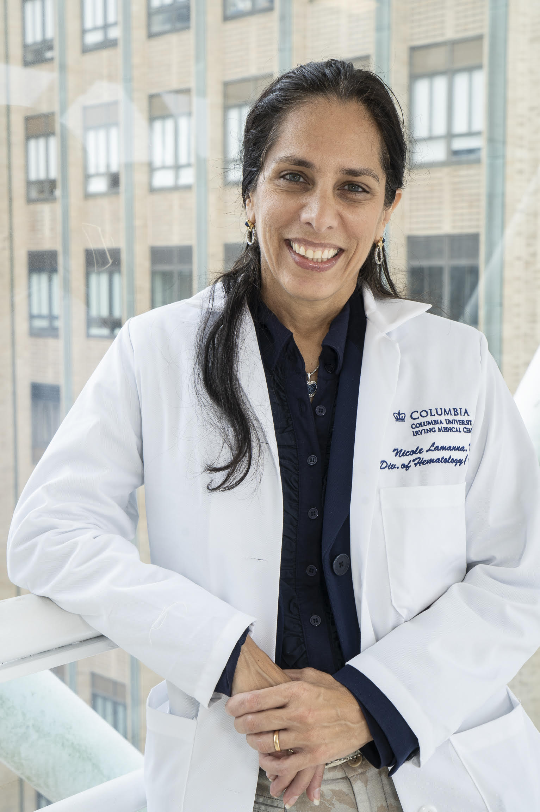

Nicole Lamanna, M.D.
Dr. Lamanna is a pioneering investigator and internationally recognized leader in CLL. As the inaugural incumbent of the Judy Horrigan Professorship of Medicine, she has expanded Columbia’s CLL research efforts, elevated the public profile of the disease, and advanced some of the most promising avenues of research for its treatment. Her work has been widely published in leading peer-reviewed journals, including Blood, The New England Journal of Medicine, The Journal of Clinical Oncology, eJHaem, Blood Advances, and Clinical Lymphoma, Myeloma & Leukemia, shaping both academic research and frontline patient care. She is a frequent invited speaker at major national and international forums, including the American Society of Hematology (ASH), the European Hematology Association (EHA), and the Society of Hematologic Oncology (SOHO), where she presents on targeted therapies, emerging agents, and personalized approaches to CLL treatment. Through her innovative research, clinical expertise, and leadership in clinical trials, Dr. Lamanna has helped redefine CLL as a chronic, manageable condition for many patients. While curative therapy remains a goal, therapies developed through trials she has led at Columbia have significantly improved patient outcomes and life expectancy. A dedicated patient advocate, she is deeply committed to education, access to expert care, and delivering both cutting-edge treatment and compassionate clinical care.